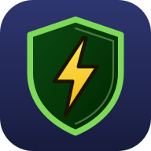

Leer-apps voor 2B STEM Realisaties
Hier vind je de apps om te leren en te oefenen. Kies een app en tik op Open de app.

Elektriciteit stap voor stap
Leer de basis van elektriciteit in 20 kleine stappen. Daarna oefen je op drie niveaus.
Open de appDe app op je toestel zetten
- Chromebook of laptop: open de app. Klik rechts in de adresbalk op het icoon Installeren.
- Android: open de app in Chrome. Tik op ⋮ en dan op App installeren.
- iPhone of iPad: open de app in Safari. Tik op Deel en dan op Zet op beginscherm.
Daarna staat de app tussen je andere apps. Ze werkt ook zonder internet.
Voor ouders
De apps zijn gemaakt voor de lessen elektriciteit in 2B STEM Realisaties.
Je kind hoeft geen account te maken. De resultaten blijven op het eigen toestel. Er worden geen gegevens van je kind verzameld of doorgestuurd.
Binnenkort
Hier komen later meer apps bij, voor andere projecten van STEM-technieken.